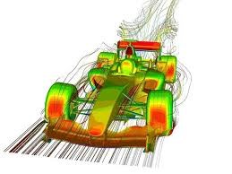
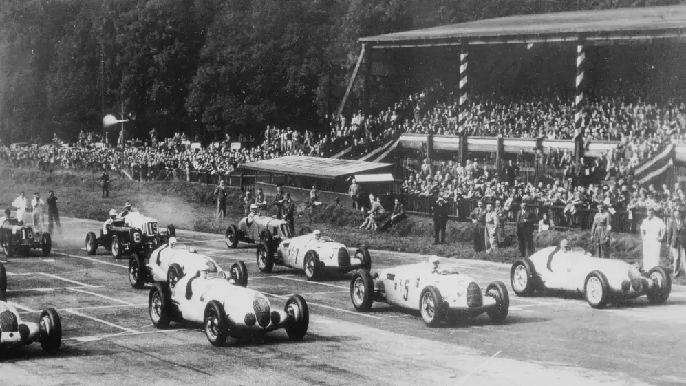

table of contents |
|---|
| Abstract |
| Introduction |
| History of automotive competitions |
| Importance of aerodynamics in cars |
| Innovation of formula 1 cars |
| References |
This study investigates how the dynamic of aerodynamics have shaped the development of a Formula 1 (F1) car from the late 1800s to the FIA foundation in 1950. It features the critical component of aerodynamics, particularly chassis and undercarriage streamlining, forcing manufacturers to design better for increased speed and efficiency. Research examines how F1 cars have evolved in the last two decades, focusing on how aerodynamics affects both speed and fuel efficiency, linking drag reductions to enhance racing performance. Incorporating insights from Formula 1 aerodynamicist Adrian Newey, the research underscores the delicate balance between innovation and safety in aerodynamics, addressing potential risks. Concluding that aerodynamics is a top factor in F1 car competitiveness, the study anticipates continued evolution. It suggests manufacturers can enhance stability and create faster, streamlined cars by pushing aerodynamic boundaries.
Formula 1 has always been a fiercely competitive and thrilling game, pushing the interest of countless people towards its impeccable layout and, annually, its Introduced improvements with the help of manufacturers to bring automobile design on a different platform. Over many, many years, the body, the chassis, and parts of Formula 1 cars have been steadily and gradually developed, all in the pursuit of lighter and faster aggregate performance. Among these modifications, one of the key elements that has significantly contributed to superior efficiency, not just in racing vehicles but additionally in standard vehicles, is the evolution of aerodynamics in motorised mediums.

With its origins very much dating back to the late 1800s in France, motor racing is steeped in rich history as it has gone through and continues to go through constant development, both in terms of the cars and the race tracks. As racing became more popular, the first Grand Prix was hosted in France, the event arranged through posing of all things the Automobile Club of France, which led for other nations to hold their own races. Race tracks in the early going had been completely opposite than what it is nowadays. Sadly, Le Mans became known as one of the most lethal tracks in history, killing countless spectators and competitors in its time. It was at the first global championship in motor racing. and included four races; the Indianapolis 500, the Grand Prix of Europe, the French Grand Prix, and the Italian Grand Prix. In 1947, the Association Internationale des Automobile Clubs Reconnus was reorganized and reconstituted with sweeping new rules and that compound word to become the Fédération Internationale de l'Automobile (FIA). Finally, In 1950 the races all united to create a grand prix world championship for formula 1 drivers.” red bull (2023) History of formula 1.

.jpg)
The two largest regions of a car in which streamlining can provide an significantly better effect as a whole are the chassis and the underside of the car. Since the debut of the primary Formula 1 auto in the mid-Fifties, manufacturers enhanced these regions significantly, looking at extra velocity and performance in each race. It is this never-ending chase for evolution that has led to the evolution of the incredible Formula 1 cars that we now witness. The airflow over a car has a multitude of effects on it performance. While aerodynamics of any car are designed to encourage many things, two aspects are its speed and mileage sense. A car that sleeker chassis offers better fuel efficiency, because it spends less power wasted overcoming air resistance. This capability allows the car's engine to transfer more energy efficiently, allowing you to achieve a higher speed. In the context of Formula 1, even a 1 mph advantage a marginal gain in speed can prove the key difference between victory and defeat in a race
Since the start, the idea behind a Formula 1 car was it had to be incredibly light, have a high-revving engine, and be quicker than the next car. However, eventually we came to realise that this wasn't the only contributor. Though a high-revving motor in a light-weight car is still important, cleaning up the Winding up splendid velocities, excelsior frames of the vehicle appeared just as immensity. Formula 1 cars have been relentlessly developed, in appearance and function, thanks in part to advancements in aerodynamics. The very first Formula 1 motors were high-topped and robust in stature, consistent with early layout philosophies. “Over time, the development of Formula 1 cars has undergone distinct periods of evolution: •The Era of Innovation: This period which introduced the monocoque chassis construction •The Era of Speed: Ground impact became outstanding in the course of this period. Venturi tunnels were employed below Formula 1 cars, harnessing the airflow beneath the automobile to generate a low-pressure area, anchoring the automobile to the ground with large downward force to prevent it from becoming airborne •The Era of Excess: Aerodynamics took another soar ahead with the inclusion of massive rear wings and ground-effect side skirts, enhancing downforce for increased vehicle balance. •The Era of Simplicity: This technology featured smaller rear wings and narrower front wings, aimed toward making driving greater tough. •The Era of Dominance: Focusing on aerodynamic efficiency and reliability, this phase included better noses and decreased rear wings to lessen drag and enhance maximum speed.” wheelsports (2023) The Evolution Of Formula One Car Design: A Journey Through The Decades. [https://wheelsports.co/the-evolution-of-formula-one-car-design-a-journey-through-the-decades/ (accessed 21st october 2023)] Adiran Newey (a famous formula 1 aerodynamicist, currently working for Red Bull) once stated in his autobiography “'It's a classic control theory problem. When you have a set of aerodynamic regulations that allow ground effect, the closer the car gets to the ground, the more downforce it gives.” issuu (2022) Thoughts on formula 1’s new era from red bulls racing’s chief technical officer, Adrian Newey. [https://issuu.com/chelseamagazines/docs/supplement/s/16254692#:~:text=Newey%3A%20'It's%20a%20classic%20control,the%20more%20downforce%20it%20gives.(accessed on 23rd october 2023)] He claimed that ground effect is an amazing phenomenon induced by the aerodynamics of the vehicle. Later on, FISA banned ground effects due to their potential to produce dangerously high cornering speeds, which could catch the driver off guard and result in the car going off the track. Throughout those transitions, even seemingly minor adjustments in vehicle aerodynamics have yielded considerable fantastic influences.
• James, D. H. (2023) The Evolution Of Formula One Car Design: A Journey Through The Decades, WheelSports [https://wheelsports.co/the-evolution-of-formula-one-car-design-a-journey-through-the-decades/ (accessed 21st october 2023)] • Skill-Lync (2023) Role of Aerodynamics in Formula 1 Racing: How Technology Has Transformed the Design of Cars [https://skill-lync.com/blogs/role-of-aerodynamics-in-formula-1-racing-how-technology-has-transformed-the-design-of-cars] • Jay, M. (2022) The science behind the next-gen FORMULA 1 car, amazon science [https://www.amazon.science/latest-news/the-science-behind-the-next-gen-2022-f1-car#:~:text=New%20robust%20aerodynamic%20features%20include,simplified%20suspension%3B%20and%20underfloor%20tunnels.] • The Judge13 (2014) #f1 history: Aerodynamics in formula 1 - part 1 [https://thejudge13.com/2014/02/05/f1-history-aerodynamics-in-formula-one-part-i/#:~:text=1968%3A%20When%20Formula%20One%20Cars%20Grew%20Wings&text=Graham%20Hill%20arrived%20at%20Monaco,the%20tyres%20and%20suspension%20system.] • Oracle Red Bull Racing (2022) Bulls' Guide To: 2022 Aerodynamics [https://www.redbullracing.com/int-en/bulls-guide-to-2022-aerodynamics]